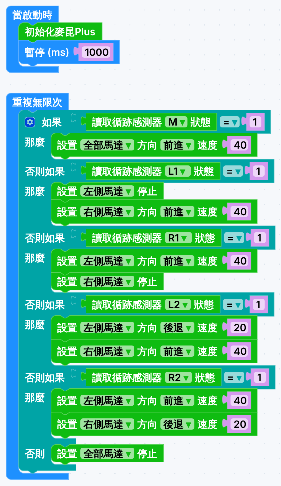

開始之前
完成今課後，你能夠：
- 認出流程圖的四個基本符號，並沿着箭頭讀懂流程圖。
- 把巡線程式畫成流程圖，並把流程圖翻譯成 MakeCode 積木。
- 先畫流程圖、再寫程式，設計使用 5 個感應器的「分層修正」巡線車。
熱身：上一課還記得嗎？不計分
本課滿分 50 分：流程圖練習 27 分；分層修正任務 21 分；學習日誌 2 分。
什麼是流程圖？
5 分
流程圖 Flowchart
流程圖用固定的圖形符號加箭頭，把程式的步驟次序和每個決定畫出來。寫程式之前先畫流程圖，就像建屋之前先畫圖則。
- 整理思路：先想清楚「有幾種情況？每種情況做什麼？」才砌積木，不會亂試。
- 與人溝通：流程圖不分程式語言，用 MakeCode、Python 的人都看得懂。
- 方便除錯：小車行為不對時，可以沿着箭頭逐步檢查，找出哪個判斷寫錯。
四個必須認識的符號
| 符號 | 名稱 | 用法 |
|---|---|---|
| 圓角長方形 | 開始／結束 | 「開始」對應「當啟動時」。一個流程圖只有一個開始。 |
| 長方形 | 處理（動作） | 要「做」的事：初始化、設置馬達、暫停 |
| 平行四邊形 | 輸入／輸出 | 取得或送出資料：讀取感應器、在 LED 顯示 |
| 菱形 | 判斷 | 問一個「是／否」問題，一定有兩條出路 |
| 箭頭 | 流程線 | 指示下一步；箭頭回到上方代表迴圈 |
三條畫圖規矩① 由上至下、由左至右；② 菱形一定有兩條出路，並寫上「是」和「否」；③ 每個符號只做一件事。
練習 1：填寫英文定義5 分
符號辨認
6 分A 部分：只看形狀，它叫什麼？ B 部分：只看內容，應該用哪個形狀？
讀懂流程圖：判斷分支與迴圈
6 分先看一個簡單例子：自動風扇。溫度太高就開風扇，否則關掉，而且要不停監測。用手指沿着箭頭走一次。
練習 2：沿着箭頭回答6 分
這個流程圖沒有「結束」，因為要不停感知。只要程式要不停感知，流程圖就會有一個回到上方的箭頭，對應「重複無限次」。
把第二堂的巡線程式畫成流程圖
6 分先在紙上畫（老師會派方格紙）
要有：開始、初始化、讀取感應器（輸入）、三個菱形（M、L1、R1）、各自的動作、回到上方的迴圈箭頭；每個菱形寫上「是」和「否」。畫完再用下面的練習核對。
下圖的 10 個空格已經畫好形狀：菱形一定是問題，平行四邊形一定是讀取感應器。在表格為每個空格選內容，流程圖會即時畫出來。
留意兩件事① 三個菱形是一個接一個的：M 答「否」才去問 L1，L1 答「否」才去問 R1——這就是「否則如果」。② 三個菱形全部答「否」（000）才走到「停止」——這就是「否則」。
用流程圖想一想不計分
由流程圖翻譯成 MakeCode 積木
4 分對照表
| 流程圖 | MakeCode 積木 |
|---|---|
| 圓角「開始」 | 當啟動時 |
| 長方形「初始化麥昆Plus」「暫停 1000 毫秒」 | 初始化麥昆Plus 暫停 (ms) 1000（放在「當啟動時」內） |
| 回到上方的箭頭（永不結束） | 重複無限次 |
| 平行四邊形「讀取巡線感應器狀態」 | 讀取循跡感測器 M 狀態（放在條件之內） |
| 第 1 個菱形「M ＝ 1？」 | 如果 … ＝ 1 那麼 |
| 之後的菱形（L1、R1……） | 否則如果 … ＝ 1 那麼（按齒輪 ⚙ 加入） |
| 全部菱形都答「否」的那條路 | 否則 |
| 長方形「設置全部馬達 前進 20」 | 設置 全部馬達 方向 前進 速度 20 |
MakeCode 沒有「讀取」這塊獨立積木，讀取感應器的積木直接放進「如果」的條件內，所以流程圖的平行四邊形和菱形會合成一塊積木。
新任務：分層修正巡線車（先畫流程圖，再寫程式）
21 分想像小車是倉庫的送貨車，車上放了一杯水。第二堂的程式每次修正都「一邊後退」急轉，車身左右急擺，水會瀉出來！可不可以大部分時間溫和地轉，真的偏得很遠才急轉？
設計構思
| 感應器讀到黑線 | 代表 | 修正方式 |
|---|---|---|
| M | 正中 | 直行（速度 40） |
| L1 或 R1 | 輕微偏離 | ② 溫和：一邊停、一邊行 |
| L2 或 R2 | 大幅偏離（L1／R1 已救不到） | ③ 急速：一邊後退、一邊前進 |
| 全部都沒有 | 脫線 | 停止 |
上一課說「只用 L1／R1 時，② 不夠用」。現在多了 L2／R2 做「後備」：② 救不到時，L2／R2 會亮起，再用 ③ 救回。直行速度要用 40：太慢的話，「一邊停」時另一邊的馬達推不動。
步驟一：在紙上畫流程圖，再核對6 分
菱形的次序已經給你（M → L1 → R1 → L2 → R2）。為每個「是」的動作和最後的「否」選出正確內容。
步驟二：熱身——不看截圖，照第 4 節的流程圖砌出第二堂的程式3 分
步驟三：照你的分層修正流程圖修改程式5 分
在模擬器選「分層修正：急彎挑戰圖」。過關條件：走完一圈、直行速度至少 40、「急轉次數」不多於 50 次（第二堂的程式在這張圖要急轉 100 多次）。
真的卡住了才打開：參考程式（先自己試 10 分鐘！）

步驟四：真車測試
- 按模擬器的「匯出到 MakeCode」，下載到 micro:bit（專案名稱：
班別_學號_flowbot）。 - 先校準感應器，再放在巡線圖上，M 對正黑線。
- 真車的速度和模擬器不一定一樣：如果「一邊停」時推不動，把直行速度加到 50；如果太急，把後退速度調低。
在地面或大枱中央測試；懸空會令感應器讀到 1，小車會繼續向前。
用流程圖除錯
小車行為不對時，不要亂改——先問：「它現在走的是流程圖中哪一條路？」
| 現象 | 流程圖上哪一步出問題？ | 解決方法 |
|---|---|---|
| 完全不動 | 卡在「開始」：沒有初始化，或判斷不在迴圈內 | 檢查初始化；全部判斷放在「重複無限次」內 |
| 只會前進，從不修正 | 菱形次序錯了，或用了幾個獨立的「如果」 | 次序 M → L1 → R1 → L2 → R2，用「否則如果」串連 |
| 在 L1 時推不動 | 「一邊停」的速度太低 | 直行（行的那一邊）速度加到 40–50 |
| 髮夾彎衝出黑線 | L2／R2 的分支沒有用「一邊後退」，或左右調轉 | 檢查第 4、5 個菱形的「是」分支 |
| 急轉次數太多 | L1／R1 也用了「一邊後退」 | L1／R1 改用「一邊停」 |
自我檢查2 分
挑戰（不計分）
- 脫線救援：把「否則 → 停止」改成「否則 → 原地慢慢轉，搜尋黑線」。先改流程圖，再改程式。
- 送貨站：在巡線圖貼一條橫線做「車站」。讀到 L1、M、R1 都 ＝ 1 時停 3 秒，再繼續。這個菱形要放在第幾個？為什麼？
- 更快更順：在急彎挑戰圖找出「急轉次數 ≤ 50」之下最快的設定。
總結、詞彙及學習日誌
2 分- 流程圖用固定符號＋箭頭：圓角＝開始／結束，長方形＝處理，平行四邊形＝輸入／輸出，菱形＝判斷。
- 菱形一定有兩條出路（是／否）；箭頭回到上方＝迴圈。
- 幾個菱形一個接一個＝「否則如果」；全部答否＝「否則」。次序很重要。
- 設計流程：畫流程圖 → 翻譯成積木 → 模擬 → 真車測試 → 沿流程圖除錯 → 優化。
- 分層修正：輕微偏離溫和轉、大幅偏離才急轉，車更順，急轉次數少很多。
| 中文 | English | 中文 | English |
|---|---|---|---|
| 流程圖 | Flowchart | 符號 | Symbol |
| 開始／結束 | Terminator | 處理 | Process |
| 輸入／輸出 | Input / Output | 判斷 | Decision |
| 迴圈 | Loop | 分支 | Branch |
學習日誌（最少 20 字）
流程圖怎樣幫你找出程式的問題？分層修正和第二堂的程式有什麼不同？
成績及交功課
繳交：下載成績報告（例如 DT_F1_L3_1A_12_陳大文.html）、紙上流程圖的照片，以及 MakeCode 分享連結，上傳到 Google Classroom／eClass。